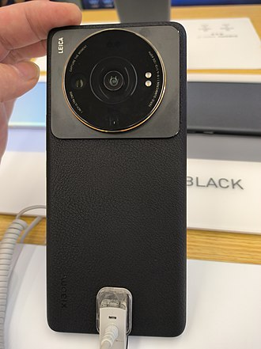

On 6 April 2010 Xiaomi was co-founded by Lei Jun and six others:
Lin Bin (林斌), vice president of the Google China Institute of Engineering
Zhou Guangping (周光平), senior director of the Motorola Beijing R&D center
Liu De (刘德), department chair of the Department of Industrial Design at the University of Science
and Technology Beijing
Li Wanqiang (黎万强), general manager of Kingsoft Dictionary
Huang Jiangji (黄江吉), principal development manager
Hong Feng (洪峰), senior product manager for Google China
Lei had founded Kingsoft as well as Joyo.com, which he sold to Amazon for $75 million in 2004.[15]
At the time of the founding of the company, Lei was dissatisfied with the products of other mobile
phone manufacturers and thought he could make a better product.
On 16 August 2010, Xiaomi launched its first Android-based firmware MIUI.[16]
In 2010, the company raised $41 million in a Series A round.[17]
In August 2011, the company launched its first phone, the Xiaomi Mi 1. The device had Xiaomi's MIUI
firmware along with Android installation.[15][18]
In December 2011, the company raised $90 million in a Series B round.[17]
In June 2012, the company raised $216 million of funding in a Series C round at a $4 billion
valuation. Institutional investors participating in the first round of funding included Temasek
Holdings, IDG Capital, Qiming Venture Partners and Qualcomm.[15][19]
In August 2013, the company hired Hugo Barra from Google, where he served as vice president of
product management for the Android platform.[20][21][22][23] He was employed as vice president of
Xiaomi to expand the company outside of mainland China, making Xiaomi the first company selling
smartphones to poach a senior staffer from Google's Android team. He left the company in February
2017.[24]
In September 2013, Xiaomi announced its Xiaomi Mi 3 smartphone and an Android-based 47-inch
3D-capable Smart TV assembled by Sony TV manufacturer Wistron of Taiwan.[25][26]
In October 2013, it became the fifth-most-used smartphone brand in China.[27]
In 2013, Xiaomi sold 18.7 million smartphones.[28]
2014–2017:-
In February 2014, Xiaomi announced its expansion outside China, with an international headquarters
in Singapore.[29][30]
In April 2014, Xiaomi purchased the domain name mi.com for a record US$3.6 million, the most
expensive domain name ever bought in China, replacing xiaomi.com as the company's main domain
name.[31][32]
In September 2014, Xiaomi acquired a 24.7% some part taken in Roborock.[33][34]
In December 2014, Xiaomi raised US$1.1 billion at a valuation of over US$45 billion, making it one
of the most valuable private technology companies in the world. The financing round was led by Hong
Kong-based technology fund All-Stars Investment Limited, a fund run by former Morgan Stanley analyst
Richard Ji.[35][36][37][38][39]
In 2014, the company sold over 60 million smartphones.[40] In 2014, 94% of the company's revenue
came from mobile phone sales.[41]
In April 2015, Ratan Tata acquired a stake in Xiaomi.[42][43]
On 30 June 2015, Xiaomi announced its expansion into Brazil with the launch of locally manufactured
Redmi 2; it was the first time the company assembled a smartphone outside of China.[44][45][46]
However, the company left Brazil in the second half of 2016.[47]
On 26 February 2016, Xiaomi launched the Mi5, powered by the Qualcomm Snapdragon 820 processor.[48]
On 3 March 2016, Xiaomi launched the Redmi Note 3 Pro in India, the first smartphone to powered by a
Qualcomm Snapdragon 650 processor.[49]
On 10 May 2016, Xiaomi launched the Mi Max, powered by the Qualcomm Snapdragon 650/652
processor.[50]
In June 2016, the company acquired patents from Microsoft.[51]
In September 2016, Xiaomi launched sales in the European Union (EU) through a partnership with ABC
Data.[52]
Also in September 2016, the Xiaomi Mi Robot vacuum was released by Roborock.[53][54]
On 26 October 2016, Xiaomi launched the Mi Mix, powered by the Qualcomm Snapdragon 821
processor.[55]
On 22 March 2017, Xiaomi announced that it planned to set up a second manufacturing unit in India in
partnership with contract manufacturer Foxconn.[56][57]
On 19 April 2017, Xiaomi launched the Mi6, powered by the Qualcomm Snapdragon 835 processor.[58]
In July 2017, the company entered into a patent licensing agreement with Nokia.[59]
On 5 September 2017, Xiaomi released Xiaomi Mi A1, the first Android One smartphone under the
slogan: Created by Xiaomi, Powered by Google. Xiaomi stated started working with Google for the Mi
A1 Android One smartphone earlier in 2017. An alternate version of the phone was also available with
MIUI, the MI 5X.[60]
In 2017, Xiaomi opened Mi Stores in India, Pakistan and Bangladesh. The EU's first Mi Store was
opened in Athens, Greece in October 2017.[61] In Q3 2017, Xiaomi overtook Samsung to become the
largest smartphone brand in India. Xiaomi sold 9.2 million units during the quarter.[62] On 7
November 2017, Xiaomi commenced sales in Spain and western Europe.[63]
2018–2021:-
A Xiaomi Store in Loulé, Portugal
In April 2018, Xiaomi announced a smartphone gaming brand called Black Shark. It had 6GB of RAM
coupled
with Snapdragon 845 SoC, and was priced at $508, which was cheaper than its competitors.[64]
On 2 May 2018, Xiaomi announced the launch of Mi Music and Mi Video to offer "value-added internet
services" in India.[65] On 3 May 2018, Xiaomi announced a partnership with 3 to sell smartphones in
the
United Kingdom, Ireland, Austria, Denmark, and Sweden[66]
In May 2018, Xiaomi began selling smart home products in the United States through Amazon.[67]
In June 2018, Xiaomi became a public company via an initial public offering on the Hong Kong Stock
Exchange, raising $4.72 billion.[68]
On 7 August 2018, Xiaomi announced that Holitech Technology Co. Ltd., Xiaomi's top supplier, would
invest up to $200 million over the next three years to set up a major new plant in India.[69][70]
In August 2018, the company announced POCO as a mid-range smartphone line, first launching in
India.[71]
In Q4 of 2018, the Xiaomi Pocophone F1 became the best-selling smartphone sold online in India.[72]
The
Pocophone was sometimes referred to as the "flagship killer" for offering high-end specifications at
an
affordable price.[73][74][72]
In October 2019, the company announced that it would launch more than 10 5G phones in 2020,
including
the Mi 10/10 Pro with 5G functionality.[75]
On November 5, 2019, Xiomi announced that it will enter the Japanese market.[76] It established a
subsidiary, Xiaomi Japan, as parts of its effort to enter the Japanese smartphone market.[77]
On 17 January 2020, POCO India became a separate sub-brand of Xiaomi with entry-level and mid-range
devices,[78][79] followed by its global counterpart on 24 November 2020.[80][81]
In March 2020, Xiaomi launched their first foldable phone, the Mi Mix Fold. Powered by Qualcomm
Snapdragon 888 with an 8.01-inch foldable AMOLED display when open and a 6.5-inch external display
when
folded.[82] In March 2020, Xiaomi showcased its new 40W wireless charging solution, which was able
to
fully charge a smartphone with a 4,000mAh battery from flat in 40 minutes.[83][84]
In October 2020, Xiaomi became the third-largest smartphone maker in the world by shipment volume,
shipping 46.2 million handsets in Q3 2020.[85]
On 30 March 2021, Xiaomi announced that it will invest US$10 billion in electric vehicles over the
following ten years.[86] On 31 March 2021, Xiaomi announced a new logo for the company, designed by
Kenya Hara.[87][88]
In July 2021, Xiaomi became the second largest smartphone maker in the world, according to
Canalys.[89]
It also surpassed Apple for the first time in Europe, making it the second-largest in Europe
according
to Counterpoint.[citation needed]
In August 2021, the company acquired autonomous driving company Deepmotion for $77 million.[90][91]
In December 2021, Xiaomi announced the Xiaomi 12 and Xiaomi 12 Pro. The phones are powered by the
Snapdragon 8 Gen 1 chipset.[92]
Since 2022:-
In April 2022, Xiaomi officially joined the Car Connectivity Consortium (CCC) board.[93]
In May 2022, the Indian court has lifted the $725 million freeze on Xiaomi by federal agencies.[94]
In June 2022, Xiaomi has established Zhuhai Xinshi Semiconductor Technology Co., Ltd., with a
registered capital of 200 million RMB. The business scope includes: integrated circuit
manufacturing, integrated circuit chip design and services, integrated circuit chip and product
manufacturing, integrated circuit design, manufacturing of specialized equipment for semiconductor
devices, manufacturing of semiconductor discrete devices, manufacturing of semiconductor lighting
devices etc. The company is jointly held by Xiaomi's affiliated company Hubei Xiaomi Changjiang
Industrial Fund Management and others.[95]
In July 2022, Xiaomi and its sub-brand POCO combined held a 42% market share in the Russian
smartphone market, ranking first.[96]
On 1 August 2022, Xiaomi India elevates COO Murali Krishnan B as president, responsible for the
company's daily operations, services, public affairs, and strategic projects. He will continue to
work towards strengthening the company's commitment to the Made in India and Digital India
initiatives.[97]
On 3 August 2022, the 2022 Fortune Global 500 list was released, with Xiaomi Group ranking 266th, a
rise of 72 positions compared to the previous year.[98]
In December 2022，Xiaomi announces that the global cumulative sales of the Redmi Note series have
exceeded 300 million units.[99]
On 28 February 2023, Redmi released a 300W fast charging technology, claiming that it can charge a
4100mAh battery by 10% in just 3 seconds, 50% in 2 minutes and 13 seconds, and fully charge it
within 5 minutes.[100]
Innovation and development
In the 2021 review of WIPO's annual World Intellectual
Property Indicators Xiaomi was ranked as 2nd in the world, with 216 designs in
industrial design registrations being published under the Hague System during 2020.[101]
This position is up on their previous 3rd place ranking in 2019 for 111 industrial
design registrations being published.[102]
On 8 February 2022, Lei released a statement on Weibo to announce plans for Xiaomi to
enter the high-end smartphone market and surpass Apple as the top seller of premium
smartphones in China in three years. To achieve that goal, Xiaomi will invest US$15.7
billion in R&D over the next five years, and the company will benchmark its products and
user experience against Apple’s product lines.[103] Lei described the new strategy as a
"life-or-death battle for our development" in his Weibo post, after Xiaomi's market
share in China contracted over consecutive quarters, from 17% to 14% between Q2 and Q3
2021, dipping further to 13.2% as of Q4 2021.[104][105][106]
According to a recent report by Canalys, Xiaomi leads Indian smartphone sales in Q1.
Xiaomi is one of the leaders of the smartphone makers in India which maintains device
affordability.[107]
In 2022, Xiaomi announced and debuted the company's humanoid robot prototype to the
public, while the current state of the robot is very limited in its abilities, the
announcement was made to mark the companies ambitions to integrate AI into its product
designs as well as develop their humanoid robot project into the future.
Partnerships
Xiaomi and Harman Kardon:-
In 2021, Harman Kardon has collaborated with Xiaomi for its newest Smartphone, the Xiaomi Mi 11 series are the first smartphones to feature with Harman Kardon-tuned dual speaker setup.[109]
Xiaomi and Leica:-
In 2022, Leica Camera entered a strategic partnership with Xiaomi to jointly develop Leica cameras to be used in Xiaomi flagship smartphones, succeeding the partnership between Huawei and Leica. The first flagship smartphones under this new partnership were the Xiaomi 12S Ultra and Xiaomi MIX Fold 2, launched in July and August 2022, respectively.[110]
Xiaomi Studios:-
In 2021, Xiaomi began collaborating with directors to create short films shot entirely using the Xiaomi Mi 11 line of phones. In 2022, they made two shorts with Jessica Henwick.[111] The first, Bus Girl won several awards[112] and was long listed for Best British Short at the 2023 BAFA.[113]

Reception
Imitation of Apple Inc.:-
Xiaomi has been accused of imitating Apple Inc.[129][130] The hunger marketing strategy of Xiaomi was described as riding on the back of the "cult of Apple".[15]
After reading a book about Steve Jobs in college, Xiaomi's chairman and CEO, Lei Jun, carefully cultivated a Steve Jobs image, including jeans, dark shirts, and Jobs' announcement style at Xiaomi's earlier product announcements.[131][132][133][134] He was characterized as a "counterfeit Jobs."[135][136]
In 2013, critics debated how many of Xiaomi's products were innovative,[134][20][137] and how much of their innovation was just really good public relations.[137]
Others point out that while there are similarities to Apple, the ability to customize the software based upon user preferences through the use of Google's Android operating system sets Xiaomi apart.[138] Xiaomi has also developed a much wider range of consumer products than Apple.[104]
Violation of GNU General Public License:-
In January 2018, Xiaomi was criticized for its non-compliance with the terms of the GNU General Public License. The Android project's Linux kernel is licensed under the copyleft terms of the GPL, which requires Xiaomi to distribute the complete source code of the Android kernel and device trees for every Android device it distributes. By refusing to do so, or by unreasonably delaying these releases, Xiaomi is operating in violation of intellectual property law in China, as a WIPO state.[139] Prominent Android developer Francisco Franco publicly criticized Xiaomi's behaviour after repeated delays in the release of kernel source code.[140] Xiaomi in 2013 said that it would release the kernel code.[141] The kernel source code was available on the GitHub website in 2020.[142]
Privacy concerns and data collection:-
As a company based in China, Xiaomi is obligated to share data with the Chinese government under the China Internet Security Law and National Intelligence Law.[143][144] There were reports that Xiaomi's Cloud messaging service sends some private data, including call logs and contact information, to Xiaomi servers.[145][146] Xiaomi later released an MIUI update that made cloud messaging optional and that no private data was sent to Xiaomi servers if the cloud messaging service was turned off.[147]
On 23 October 2014, Xiaomi announced that it was setting up servers outside of China for international users, citing improved services and compliance to regulations in several countries.[148]
On 19 October 2014, the Indian Air Force issued a warning against Xiaomi phones, stating that they were a national threat as they sent user data to an agency of the Chinese government.[149]
In April 2019, researchers at Check Point found a security breach in Xiaomi phone apps.[150][151] The security flaw was reported to be preinstalled.[152]
On 30 April 2020, Forbes reported that Xiaomi extensively tracks use of its browsers, including private browser activity, phone metadata and device navigation, and more alarmingly, without secure encryption or Data anonymization, more invasively and to a greater extent than mainstream browsers. Xiaomi disputed the claims, while confirming that it did extensively collect browsing data, and saying that the data was not linked to any individuals and that users had consented to being tracked.[153] Xiaomi posted a response stating that the collection of aggregated usage statistics data is used for internal analysis, and would not link any personally identifiable information to any of this data.[154] However, after a followup by Gabriel Cirlig, the writer of the report, Xiaomi added an option to completely stop the information leak when using its browser in incognito mode.[155]
Censorship:-
In September 2021, amidst a political spat between China and Lithuania, the Lithuanian Ministry of National Defence urged people to dispose the Chinese-made mobile phones and avoid buying new ones,[156] after the National Cyber Security Centre of Lithuania claimed that Xiaomi devices have built-in censorship capabilities that can be turned on remotely.[157]
Xiaomi denied the accusations, saying that it "does not censor communications to or from its users", and that they would be engaging a third-party to assess the allegations. They also stated that regarding data privacy, it was compliant with two frameworks for following Europe's General Data Protection Regulation (GDPR), namely its ISO/IEC 27001 Information Security Management Standards and the ISO/IEC 27701 Privacy Information Management System.[158]